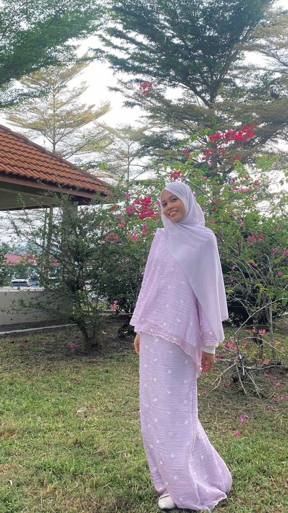

Hi, I’m Nur Allysa
I am currently pursuing a Diploma in Information Management at Universiti Teknologi MARA
(UiTM). I am a highly motivated Information Management student with a strong interest in
records and archives management, metadata, and creative digital organisation. My academic
background has provided me with a solid foundation in records management, documentation
practices, web development, programming, and database management.
I am based in Kulai, Johor, and was born on 25 April 2005. I have gained practical experience in documentation and records handling through my internship at Majlis Perbandaran Kulai (MPKU), where I was exposed to real-world records management practices and administrative documentation.
I am based in Kulai, Johor, and was born on 25 April 2005. I have gained practical experience in documentation and records handling through my internship at Majlis Perbandaran Kulai (MPKU), where I was exposed to real-world records management practices and administrative documentation.
Welcome
This portfolio website highlights my background, skills, achievements, and gallery moments.
Feel free to explore each section using the navigation above.

Nur Allysa
Date & Time
Loading date & time...